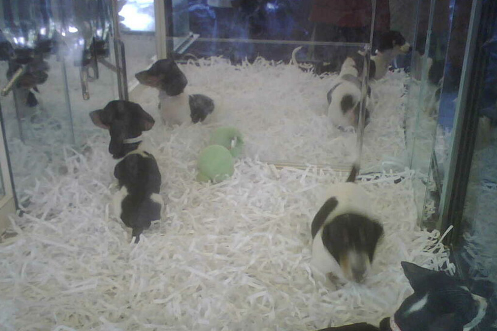

Do You Really Know What A Puppy Mill Is?
Puppy/cat mills are commercially bred and massed produced dogs and cats. They are legally allowed to keep hundreds of dogs in cages for the entirety of their life, for the purpose of producing puppies. Because they are seen as a cash crop instead of an animal, they are treated inhumanely:
- Puppies are confined to overcrowded cages with no room or cover from the weather
- They suffer from malnutrition and starvation because of unsanitary food and water
- Receiving no veterinary care even though they are sick or dying
- Adult dogs are continuously bred until they cannot reproduce and are then discarded once they have no use
- They are taken from their mothers at a very early age
- Later in life they show issues like eye and hip defects, parasites, and deadly viruses



Most of these facilities get away with these things barbaric acts because the dogs are labeled as purebred and “designer” hybrid breeds. However, do not be fooled. When searching for a pet ensure that the seller does not:
- Have a variety of purebred or “designer” mixed breeds
- Sell the animal in less than six weeks of being born
- Resist showing the premise of where the animals are bred and raised
- Ask little questions about potential buyers
- State they will not take the pet back at any point in its life
Put A Stop To It
We need to combat this problem. To do that you can:
- Be an informed consumer
- Meet the dog beforehand
- Learn its medical history
- Make sure they ask questions about your ability to take care of it
- Adopt from a shelter
- Donate supplies to local shelters
- Learn more about these issues